01
CAPELLA CORE
Mixed Park · Kids Park · Pet Park · Movie Park · Ciclopista
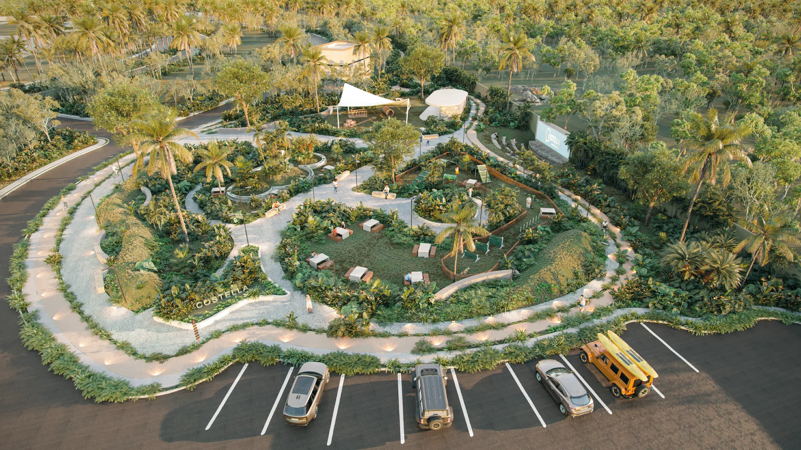
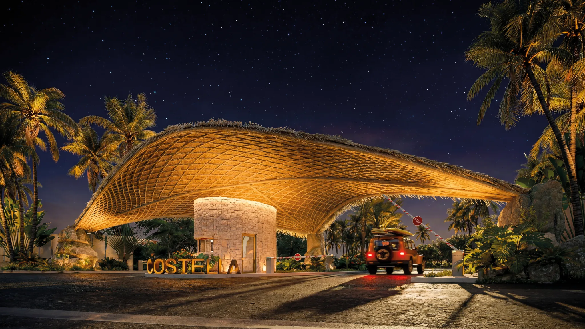
TELCHAC · YUCATÁN
Un lugar para vivir el presente y comenzar a imaginar todo lo que viene.
UNA VIDA DIFERENTE
Costella nace en Telchac para quienes buscan un espacio donde la naturaleza, el descanso y el tiempo tengan otra manera de sentirse.
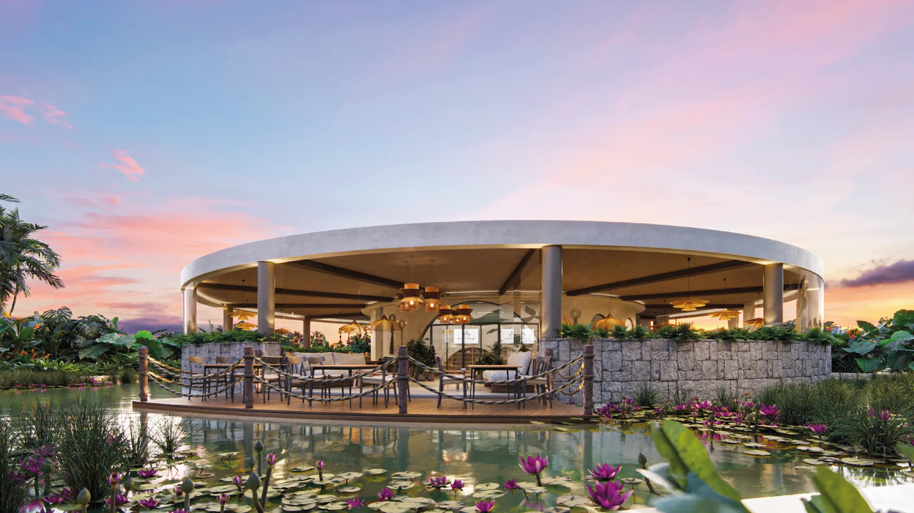
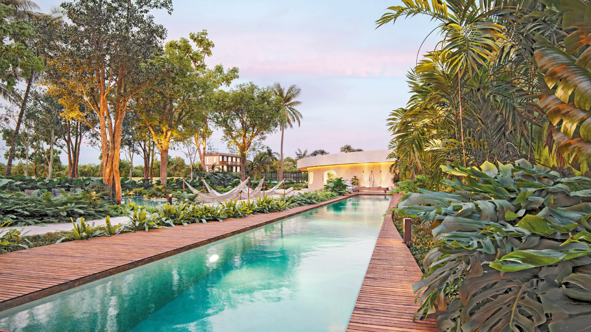
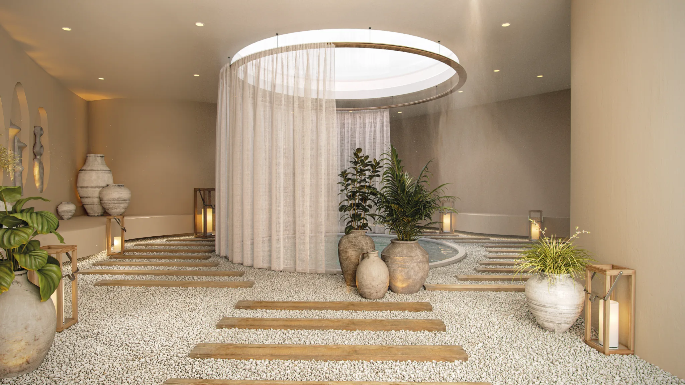
Descubre Costella a tu propio ritmo.
TELCHAC
Costella se encuentra en Telchac Pueblo, con conexión a playas, naturaleza, zonas arqueológicas y destinos de la costa yucateca.
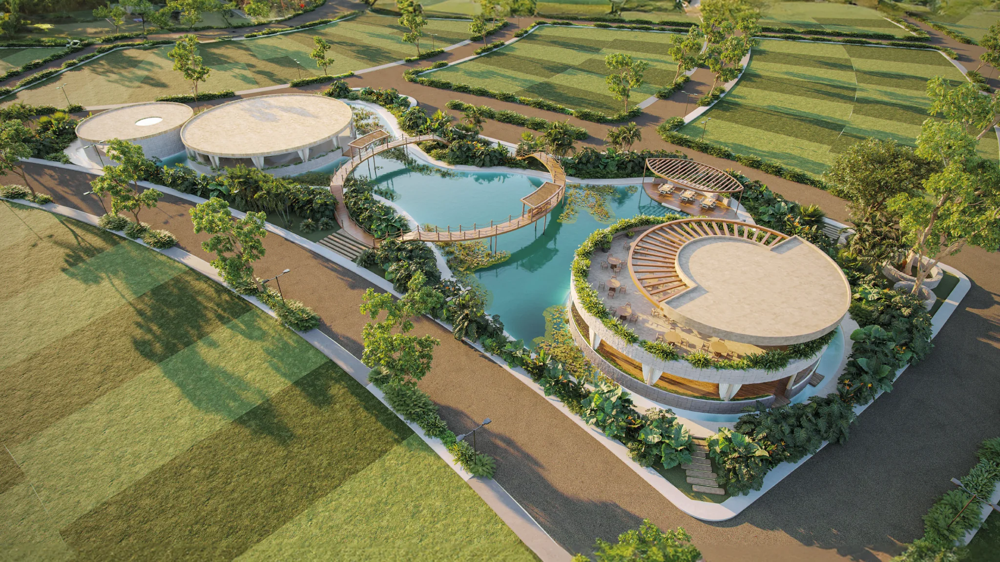
Conoce la ubicación y el proyecto con un asesor.
COSTELLA TELCHAC RESIDENCIAL
Un desarrollo residencial urbanizado en régimen condominal, pensado para construir tu propio espacio y disfrutar una experiencia integral.
El primer paso puede comenzar hoy.
GALERÍA
Renders del proyecto para visualizar las experiencias, espacios y amenidades de Costella.
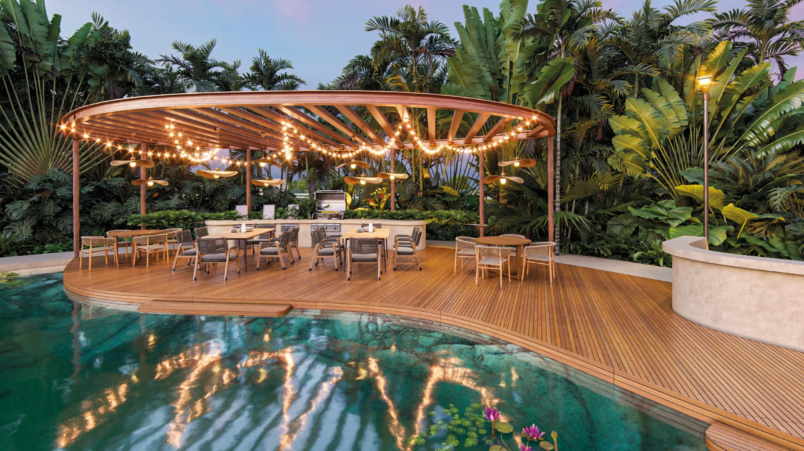
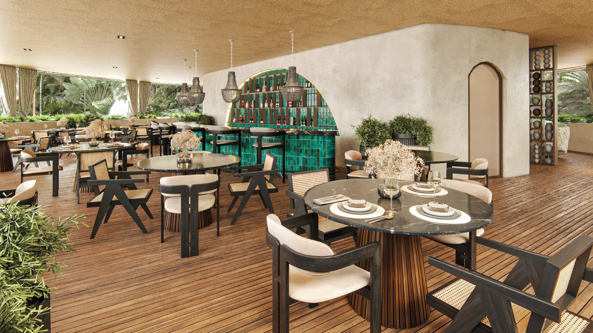
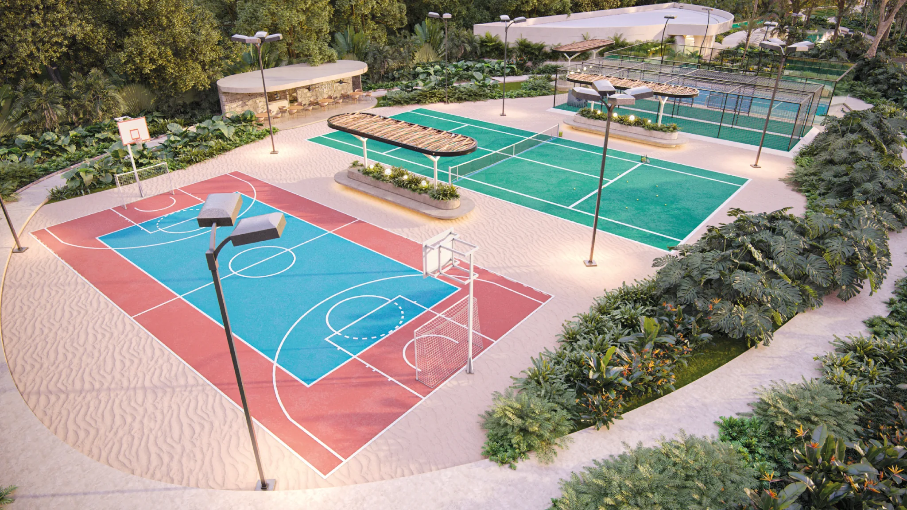
Toca o haz clic en cualquier imagen para verla a pantalla completa.
Hay mucho más por descubrir.
COSTELLA EN VIDEO
El video se cargará desde YouTube para mantener la landing ligera y evitar alojar archivos pesados.
¿Quieres conocer disponibilidad y condiciones actuales?
AMENIDADES
Distribuidas en cuatro puntos del desarrollo para crear diferentes maneras de vivir Costella.
Mixed Park · Kids Park · Pet Park · Movie Park · Ciclopista

Mixed Park · Wet Park · Pet Park · Zen Garden · Ciclopista
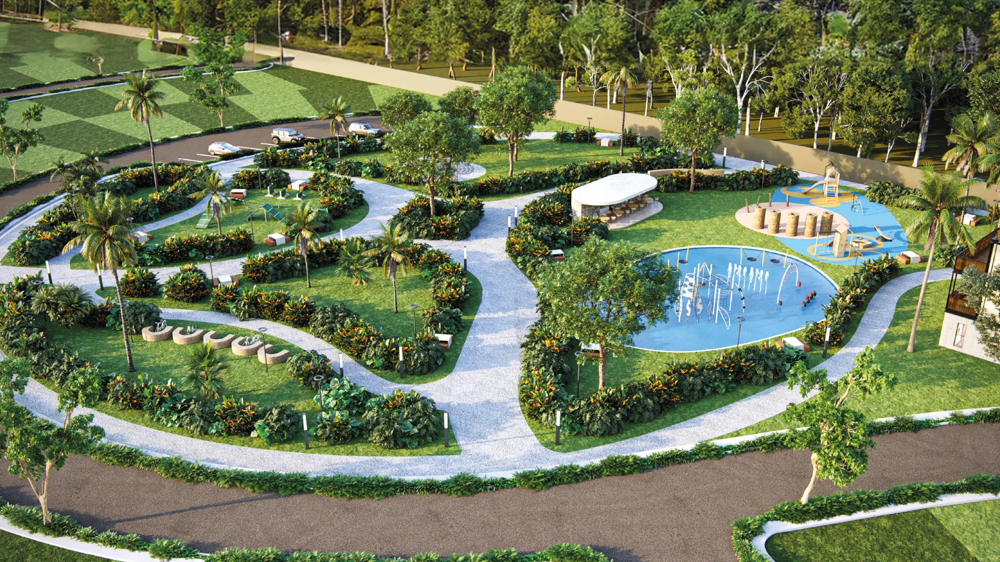
Restaurante · Bar · Muelle · Mirador · Grill · Cuerpo de agua
Mini golf · Gym · Tennis · Pádel · Spa Zen · Canal de nado · Alberca
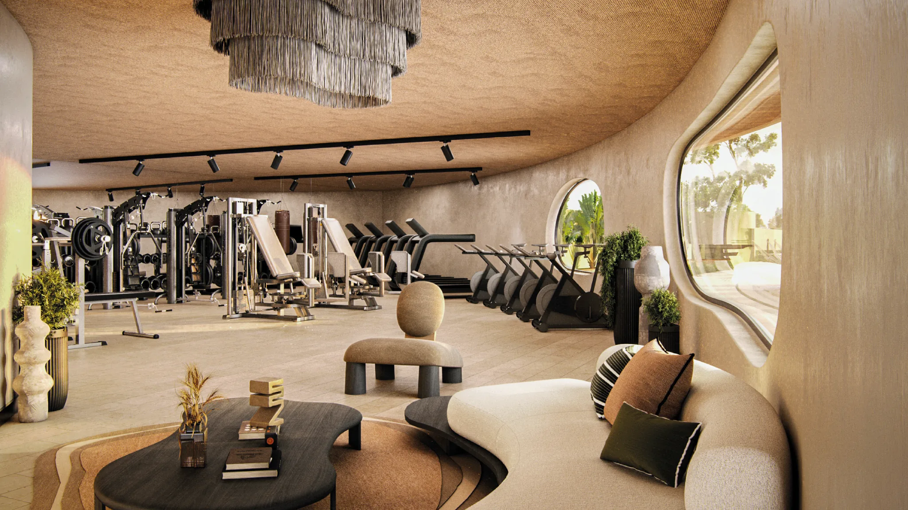
Descubre las experiencias que forman parte de Costella.
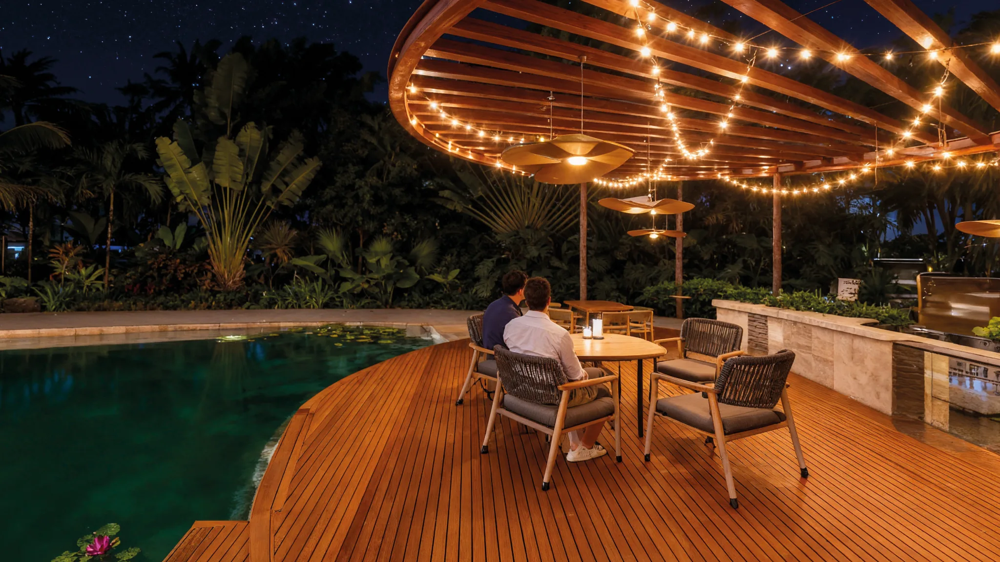
CLUB STELLA
Restaurante, bar, muelle, mirador, grill y un cuerpo de agua de 2,330 m².
Un lugar para hacer espacio a lo que importa.
Más experiencias, más posibilidades, más tiempo.
El primer paso hacia tu propio espacio en Telchac.
Tu proyecto comienza con una conversación.
TU TERRENO
Conoce las condiciones comerciales y encuentra el terreno que se adapte a tu proyecto.
EVOLUCIÓN HISTÓRICA
El material comercial presenta una evolución histórica del valor por m² entre diciembre de 2023 y enero de 2026.
Información histórica proporcionada por el desarrollador. Consulta las condiciones comerciales vigentes.
Conoce las condiciones comerciales vigentes directamente con un asesor.
UN PROYECTO QUE CRECE
Consulta disponibilidad y opciones actuales.
PREGUNTAS FRECUENTES
Al municipio de Telchac Pueblo.
Desde 200 m² hasta 350 m².
El apartado indicado en el material es de $5,000 MXN.
El documento indica que la adquisición se realiza con recursos propios o mediante el financiamiento del proyecto.
Una vez liquidado el terreno, de acuerdo con la información proporcionada.
COSTELLA · TELCHAC RESIDENCIAL